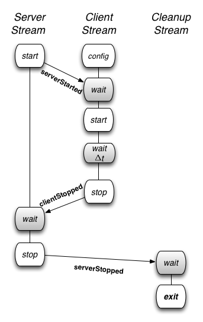

In this tutorial we walk you through setting up a basic orchestrated experiment. This page also includes common advanced topics. Detailed descriptions of the commands and configuration files are available in the reference section.
Note
If you are a student, go to the education.deterlab.net site for classroom-specific instructions.
Basic MAGI Tutorial
In this tutorial, we demonstrate how to set up client and server traffic generators with only one server and one client. (For more complex examples, see the Case Studies.)
The basic steps in creating an orchestrated experiment are:
- Write the AAL file that describes the experiment's workflows.
- Include a special start command in your topology.
- Create or use a physical experiment in DETERLab.
- Run the Orchestrator tool on a physical experiment on
users.isi.deterlab.net.
The following sections describe each step in detail.
Step 1. Write the AAL file
Describe the experiment procedure (ie, workflow) in an AAL (.aal) file. First we'll cover the parts of an AAL file and then we'll walk through writing the AAL file for this tutorial (we also provide the AAL file itself).
AAL File Overview
Agent Activation Language (AAL) is a YAML-based descriptive language that describes an experiment’s workflow. It identifies groups (nodes with similar behaviors), agents (a set of behaviors that may be invoked as events) and events/triggers (the different things you want agents to do and the things that trigger them).
An AAL specification has mainly three parts: groups, agents and event streams.
Groups
Groups define sets of one or more nodes with the same behavior and enable a coupling between the experiment procedure and the experiment nodes.
Example:
groups:
clients: [ node1, node2, node7 ]
defender: [ router3 ]
Agents
Agents map a functional behavior onto a set of experiment nodes. An agent provides a set of behaviors that may be invoked with events. The agent directive requires the following keys:
-
agentName for the set of nodes that represent the behavior
-
groupA set of experiment nodes the will functional as the agent
-
pathThe path to the agent implementation code
-
codeDirectory name of the agent implementation. The code directive is used in the absence of a path directive. MAGI requires the agent implementation to be part of the python distribution if the path directive is not specified.
-
execargsZero or more arguments that will be passed to the agent during initialization.
Example:
agents:
smallwebclient:
group: smallclients
path: /share/magi/modules/http_client/http_client.tar.gz
execargs: { servers: [ servernode ], interval: '2', sizes: 'minmax(300,500)'}
Event Streams
Event Streams are lists of events and triggers that are parsed and executed by the Orchestrator tool. A procedure typically contains multiple event streams. Different event streams execute concurrently and are synchronized with each other using triggers.
The set of event streams listed using the streamstarts directive are invoked at the start of procedure. However, note that the Orchestrator will perform several setup actions, such as create groups, load agents, get status, before the event streams start.
Events
Events invoke a procedure implemented in an agent. An event is sent to a group. An event directive requires the following keys:
agent:: The agent to send the event.
method:: The method to be invoked.
args:: Zero or more arguments required by the method.
Additionally, it may also contain the trigger key to flag the return status from the method. The return status may be either True or False.
Example:
- type: event
agent: server_agent
method: startServer
trigger: serverStartedSuccessfully
args: {}
Triggers
Triggers are used as a synchronization mechanism, guard points, or rendezvous points in an experiment procedure. There are two types of triggers that may be combined in several different ways:
-
Event-based triggers are received from agents after a method. The
serverStartedSuccessfullyis an example of an event-based trigger. The Orchestrator keeps track of outstanding triggers to follow the experiment execution state space. When the server_agent returns True after the methodstartServer, the Orchestrator tags it as a received trigger.Example:
- type: trigger triggers: [ {event: ClientStopped} ] -
Time-based triggers wait for a specified amount time to elapse at the Orchestrator before proceeding.
Example:
- type: trigger triggers: { [ timeout: 60000 ] } # wait for 60 seconds
You may find several specific examples of declaring groups, agents, events, and triggers in the Case Studies.
For this basic tutorial, save this code to a file named procedure.aal and save it to the experiment folder.
Our AAL Example
Now we'll write an AAL that demonstrates three aspects of MAGI: specifying multiple event streams, synchronizing with triggers, and a special target called exit to unload agents.
Event Streams
This example has three events streams; the server stream, the client stream, and the cleanup stream.
The coordination between the events can be illustrated as follows:

Event streams can be synchronized using event-based triggers (such as after the server has started) or time-based triggers (such as wait for 30 seconds). The triggers are indicated as wait states (in gray). Forming the groups and loading the agents, which are also automated by the orchestrator tool, are not illustrated above.
Server Stream
The server event stream consists of three states.
-
The start state generates a trigger, called
serverStarted, once the server agent is activated on the experiment nodes. -
It then enters the wait state where it waits for a trigger from the client event stream.
-
Once the trigger is received, it enters the stop state, when the server is deactivated or terminated.
Here is the relevant AAL description:
serverstream:
- type: event
agent: server_agent
method: startServer
trigger: serverStarted
args: {}
- type: trigger
triggers: [ {event: ClientStopped} ]
- type: event
agent: server_agent
method: stopServer
trigger: ServerStopped
args: {}
Client Stream
The client event stream consists of five states.
- First, the client agent implementation is parameterized by the configuration state. This occurs as part of the agent loading process.
- The client stream then synchronizes with the server stream by waiting for the
serverStartedtrigger from the server nodes. - Once it receives the trigger, the client agent is activated in the start state.
- Next, the client stream waits for a period of time and then terminates the client agents in the stop state.
- On termination, the client agents send a
clientStoppedtrigger that allows the server stream to synchronize and terminate the servers only after all the client have terminated.
Here is the relevant AAL description:
clientstream:
- type: trigger
triggers: [ {event: ServerStarted} ]
- type: event
agent: client_agent
method: startClient
args: {}
- type: trigger
triggers: [ {timeout: 60000} ]
- type: event
agent: client_agent
method: stopClient
trigger: clientStopped
args: {}
Cleanup Stream
The last event stream, the cleanup stream consists of two states.
- First, it waits for all the servers to stop.
- Then it enters the exit state.
The exit state unloads and tears down all the communication mechanisms between the agents. The exit state is entered by the key target and is used to transfer control to a reserved state internal to the Orchestrator.
It causes the Orchestrator to send agent unload and disband group messages to all of the experiment nodes and then it exits the Orchestrator.
Here is the relevant AAL code:
cleanup:
- type: trigger
triggers: [ {event: ServerStopped, target: exit} ]
You can see all of the code together in this file: casestudy_clientserver.aal.
Step 2: Swap in the the physical experiment using topology with MAGI start command
Swap in the experiment using this network description file: casestudy_clientserver.tcl.
This start command installs MAGI and supporting tools on all nodes at startup.
The normal syntax is as follows:
tb-set-node-startcmd $NodeName "sudo python /share/magi/current/magi_bootstrap.py"
where $NodeName is the control node.
If you look at this file, you'll see the MAGI start command is added as a variable and then used for two nodes: the clientnode and servernode.
In this example, we set the start command as a variable:
set magi_start "sudo python /share/magi/current/magi_bootstrap.py"
and then use it
Step 2: Set up your environment
Set up environment variables for your environment, replacing the value for myExp with your experiment name and myProj with your project name.
PROJ=myExp
EXP=myProj
AAL=casestudy_clientserver.aal
Create/Use an experiment in DETERLab
MAGI needs to be enabled on a new or existing swapped-in DETERLab experiment (via interface or using startexp on the commandline). You will need its Experiment Name and Project Name when you run the Orchestrator in the next step.
Make sure you’ve swapped-in resources before the next step.
Run the magi_orchestrator.py tool
The MAGI Orchestrator tool, magi_orchestrator.py, is a tool that reads the procedure's AAL file and orchestrates an experiment based on the specified procedures. The Orchestrator does the following in this order:
- Joins Groups - The Orchestrator iterates over the list of groups and for each group sends a request to all the mapped nodes to join the group. A corresponding reply adds the replier to the group. Messages addressed to a group are sent to all the nodes that are part of the group.
- Loads Agents - The Orchestrator iterates over the list of agents and for each agent sends an agent load request to the mapped groups. An agent load message tells the Orchestrator to start an instance of the agent implementation and to put it in a listening mode, where the instance waits for further messages.
- Executes Event Streams - Next, the Orchestrator concurrently executes all the event streams listed as part of
streamstarts. The Orchestrator has a predefined event stream calledexit. The purpose of this event stream is to unload all the agents and disjoin groups. All workflows should end with executing this stream for a clean exit.
From your home directory on users.isi.deterlab.net, run the following command:
/share/magi/current/magi_orchestrator.py --control clientnode.myExp.myProj --events procedure.aal
where:
clientnodeequals the node you want to start withmyExpis the Experiment NamemyProjis the Project Nameprocedural.aalis the name of the AAL file.
The various command line options are as follows
Usage: magi_orchestrator.py [options]
Options:
-h, --help
show this help message and exit
-c CONTROL, --control=CONTROL
The control node to connect to (i.e. control.exp.proj)
-f EVENTS, --events=EVENTS
The events.aal file(s) to use. Can be specified
multiple times for multiple AAL files
-l LOGLEVEL, --loglevel=LOGLEVEL
The level at which to log. Must be one of none, debug,
info, warning, error, or critical. Default is info.
-o LOGFILE, --logfile=LOGFILE
If given, log to the file instead of the console
(stdout).
-e EXITONFAILURE, --exitOnFailure=EXITONFAILURE
If any method call fails (returns False), then exit
all streams, unload all agents, and exit the
orchestrator. Default value is True
-g GROUPBUILDTIMEOUT, --groupBuildTimeout=GROUPBUILDTIMEOUT
When building the initial groups for agents in the
given AAL, use the timeout given (in milliseconds)
when waiting for group formation to complete.
--nocolor
If given, do not use color in output.
-v, --verbose
Tell orchestrator to print info about what its doing
-n, --tunnel
Tell orchestrator to tunnel data through Deter Ops
(users.deterlab.net).